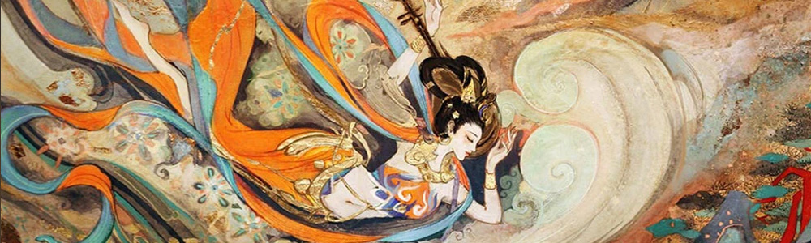

首页
传统技艺
剪纸
刺绣
皮影戏
陶瓷
油纸伞
竹编
传统戏剧
京剧
越剧
昆曲
评戏
豫剧
传统医药
民间文化
非遗简介
Introduction to intangible cultural heritage items
非遗的组成展示了中国非遗的丰富多样性和深厚文化底蕴，每一项非遗都承载着特定地区、民族或群体的历史记忆、智慧和情感，对于传承和弘扬中华民族优秀传统文化具有重要意义。 中国政府高度重视非遗保护工作，亲身体验和参与非遗活动也是深入了解和感受非遗魅力的好方法。保护和传承非遗是我们每个人的责任，共同努力可以让这些独特的文化瑰宝永远传承下去。
非遗之美
The beauty of intangible cultural heritage
非遗承载着深厚的历史文化内涵，它是一个民族或群体在长期的生产生活中积累的智慧结晶。比如京剧，其精美的服饰、独特的唱腔、丰富的故事，都蕴含着中国传统文化中对于道德、伦理、审美等方面的思考和表达。技艺精湛之美： 许多非遗项目都需要高超的技艺才能完成。像苏绣，绣娘们用细腻的针法和精湛的技巧，在绸缎上绣出栩栩如生的花鸟鱼虫，这种精湛的技艺令人赞叹不已。
非遗的传承往往是一代又一代人口传心授，传承者们坚守着对传统文化的热爱和执着，这种传承精神本身就是一种美。比如纳西族东巴文化的传承者，他们不顾艰难，坚持将古老的文字和传统传承下去。一些非遗项目体现了人类与自然的和谐共处。如竹编技艺，利用天然的竹子，经过巧妙的编织，成为实用又美观的器具，展现了对自然材料的充分利用和尊重。与自然和谐之美：
参观体验
Visit experience
非遗知识
Intangible cultural heritage knowledge